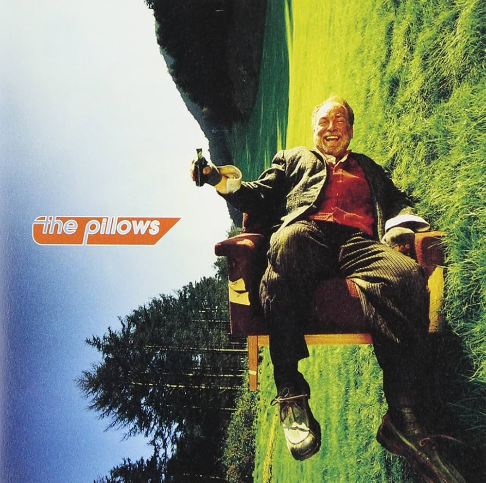

The album cover for the pillows’ 1999 release, Happy Bivouac, is an iconic slice of late-90s Japanese alternative rock aesthetic, blending a surreal, fish-eye lens perspective with a vibrant, high-saturation color palette. It features an elderly man—presumably the "happy camper"—grinning broadly while reclining in a plush armchair in the middle of a lush, sun-drenched field. The tilted horizon line and the man’s jaunty pose, complete with a small bottle in hand, perfectly capture the band’s signature "Burstanshop" energy: a mix of scuzzy, guitar-driven rock and infectious, feel-good optimism. The typography, rendered in a bold, retro-futuristic stencil font, sits at a dynamic angle that matches the slope of the hill, tying together a visual theme of finding comfort and joy in unconventional, wide-open spaces.
Phonographic Copyright ℗King Record Co. Ltd